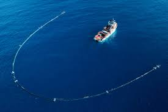

is and it also shows what countries are surrounding it.
Our Mission
The Ocean Cleanup's mission is to develop advanced technologies to ride the oceans of plastics.
Our Objectives
- to develop and apply technologies (directly as well as indirectly) to remove- on a large scale- plastic pollution from the oceans
- to develop and apply technologies (directly as well as indirectly) to remove plastic pollution from the waste streams to prevent it from reaching the oceans
- to increase social awareness of the pollution of the marine environment by plastic; and other acts which is in the broadest sense relate or may be conduciveto the aforesaid objectives
What is the Plan?
The Ocean Cleanup has made a form of technology that is estimated to cleanup the garbage within 5 years. It is environmentally safe, and cost less than expected.
How does it Work?
The system consists of a 600 meter long floater that sits at the surface of the water. The floater is a sort of blockade from other plastic flowing over it, while the machine gets garbage thats underneath the water. The system and the plastic are moving through the current, as well as, natural forces like wind. The systems fully rely on natural forces and do not require external energy, all electricity is powered by solar energy.
The system was designed to clean the ocean while not harming the sealife. The systems are moving very slowly, allowing sea creatures to swim beneath the machine.
How you can help!
The Ocean Cleanup is always looking for more volunteers, you can contact them using the link below!